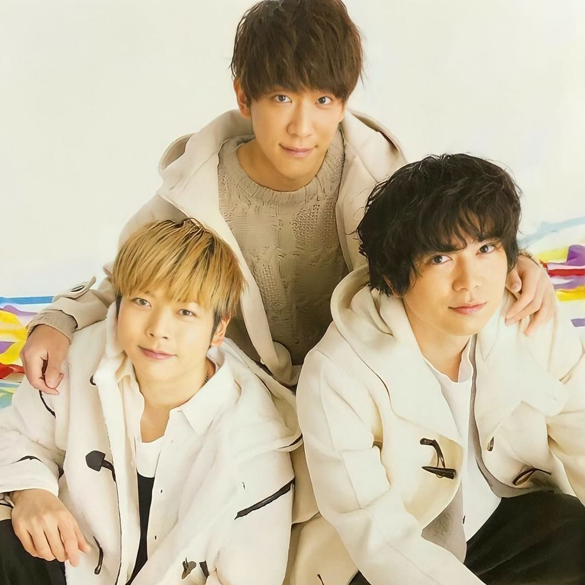
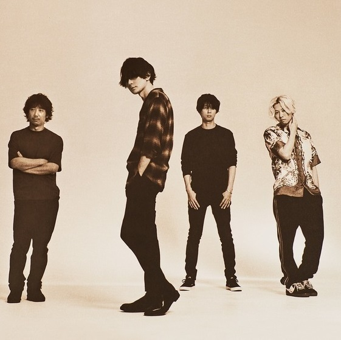
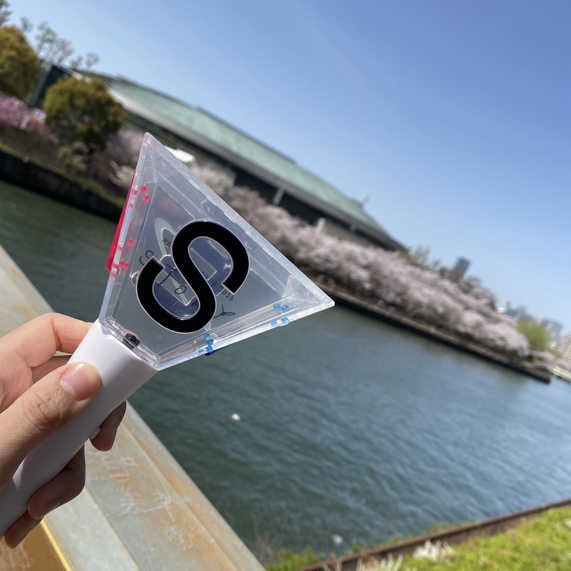
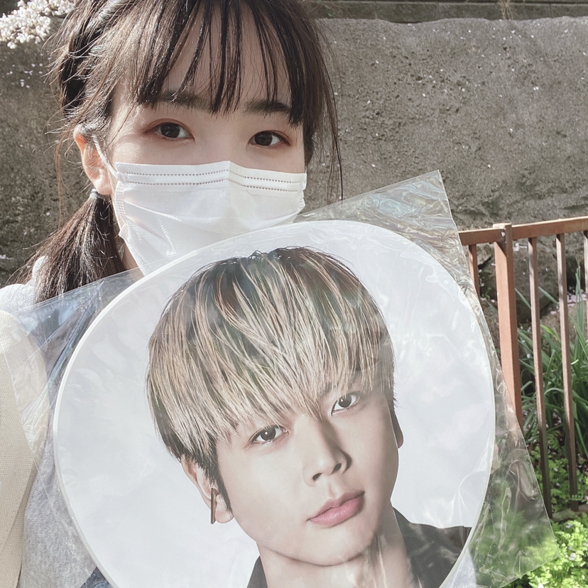
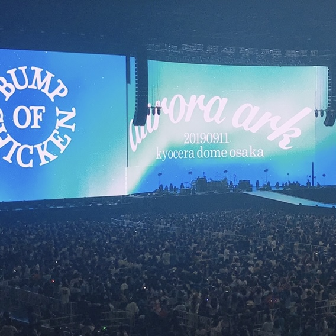
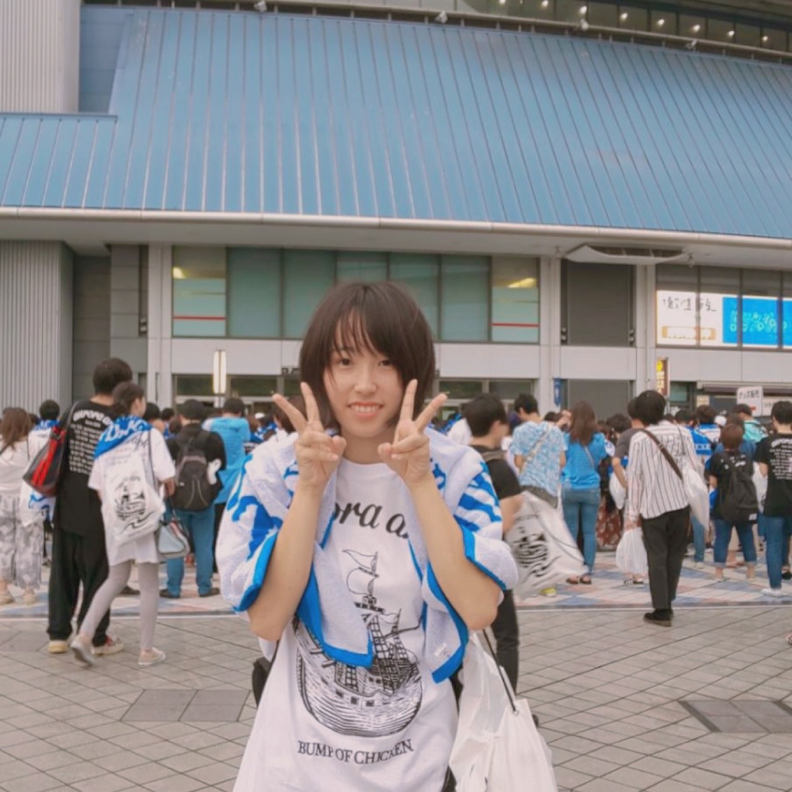
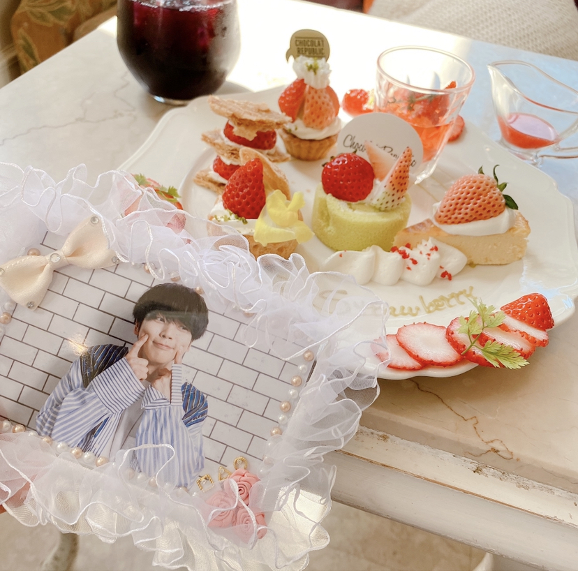
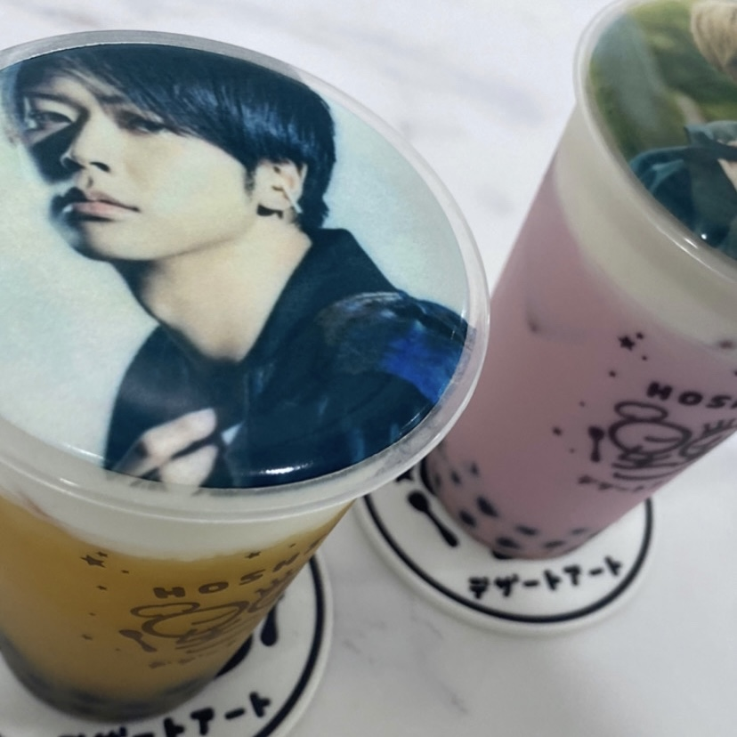
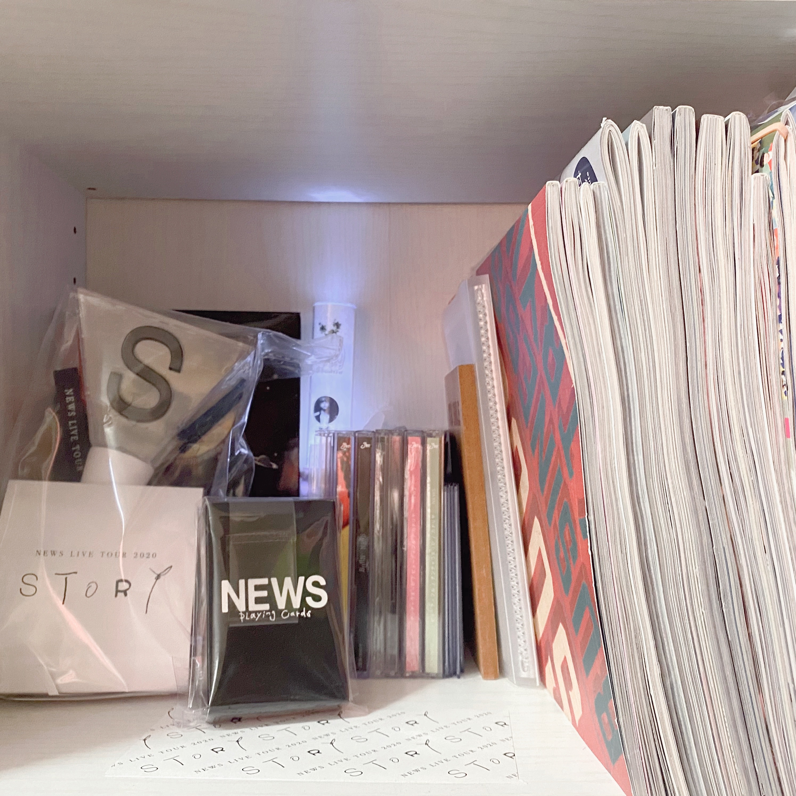
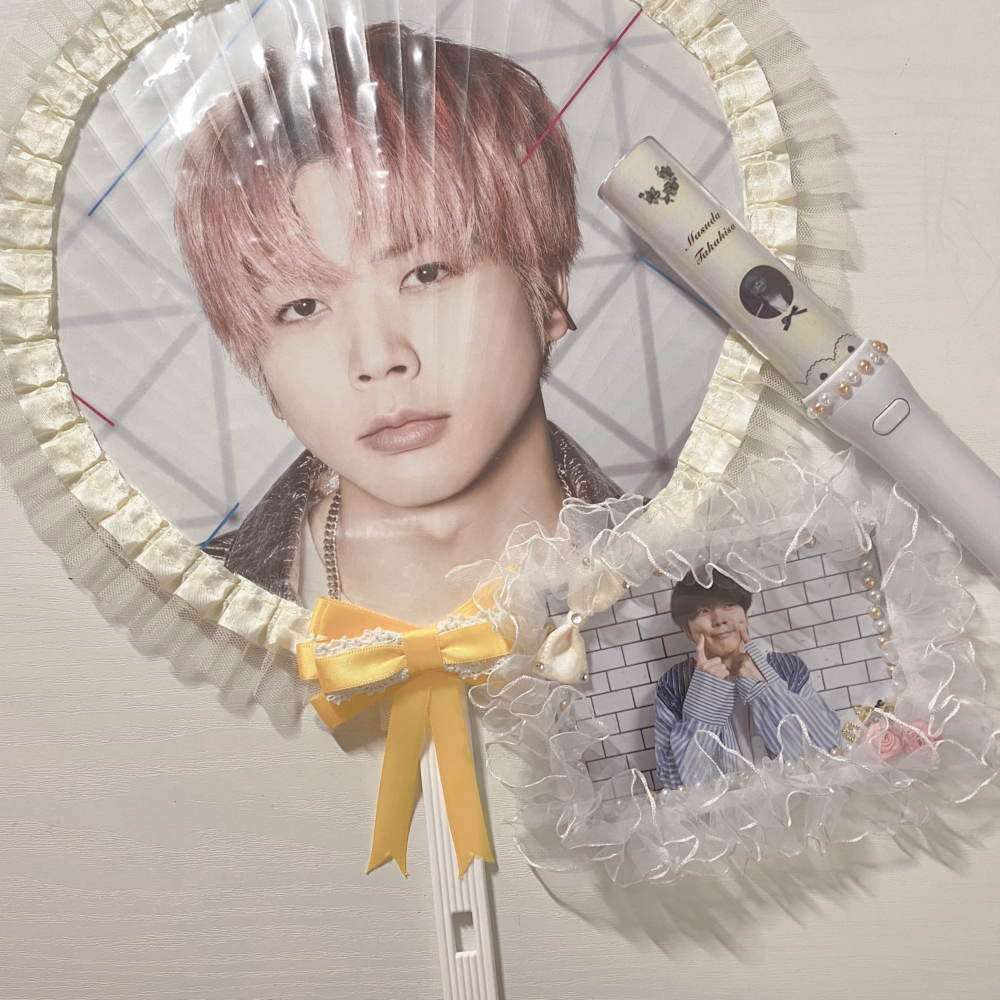

hobby
私の趣味はオタ活です。好きな推しを追いかけて日々楽しんでいます。
ここでは少し私のオタ活の記録を紹介します。
私の推し♡

news
ジャニーズグループのnewsです！
特に増田さんが好きで毎日癒されています。

bump of chicken
バンドのbump of chickenです！
いつも素敵な音楽を奏でてくれます。
ライブに行く―オタ活①―


newsのライブSTORY
2021年の3月31日に大阪城ホールで行われた時のライブの写真です。
newsの愛があふれるとても素敵なライブで楽しかったです！！


bump of chickenのライブaurora ark
2019年の9月13日に京セラドームで行われた時のライブの写真です。
大きな会場で景色が綺麗だったのが思い出です。
他にも舞台に行ったりして、推しと会える時間を大切にしています！！
推しとカフェ巡り―オタ活②―


推しとカフェ巡り
友達と遊ぶ時、カフェと推しの写真を一緒に撮って遊んでいます。
映え写真を練習中で、撮った写真はInstagramにアップしています。
グッズ集め―オタ活③―


グッズ集め
ライブグッズやCD、DVD、雑誌など推しのグッズを集めています。
また映える写真をとるためのグッズデコにも挑戦しています。